STAM 102 :: Lecture 07 :: MSWORD: Word-processing and units of document, features of word-processing packages. Creating, Editing, Formatting and Saving a document in MSWORD

Word-processing
-
Word-processing the process of using computer to create, edit and print documents.
-
Word processing is creating documents with
-
Various font face, font styles, font sizes, font colors (eg: one, two, three)
-
Different text effects (MS Word is a product of Microsoft Corporation)
-
Different alignments as shown below:
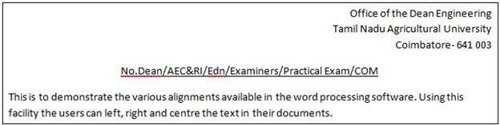
-
facility to automatically correct misspelled words and grammatical mistakes
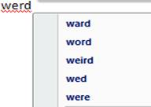
-
The ability to see how the document will look
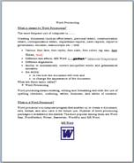
-
To perform word processing, a special program called a word processor is in need.
-
A word processor enables you to create a document, store it electronically on a disk, display it on a screen, modify it by entering commands and characters from the keyboard, and print it on a printer.
-
Examples of Word processors
-
Wordstar
-
Writer
-
Leap
-
WordPerfect
-
MS Word
MSWORD
|
Word Screen
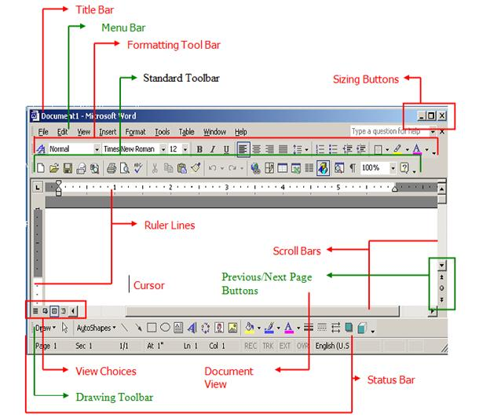
Features of word processing
Word processors vary considerably, but all word processors support the following basic features:
Insert text: Allows you to insert text anywhere in the document.
Delete text: Allows you to erase characters, words, lines, or pages as easily as you can cross them out on paper.
Cut and paste: Allows you to remove (cut) a section of text from one place in a document and insert (paste) it somewhere else.
Copy: Allows you to duplicate a section of text.
Page size and margins: Allows you to define various page sizes and margins, and the word processor will automatically readjust the text so that it fits.
Search and replace: Allows you to direct the word processor to search for a particular word or phrase. You can also direct the word processor to replace one group of characters with another everywhere that the first group appears.
Word wrap: The word processor automatically moves to the next line when you have filled one line with text, and it will readjust text if you change the margins.
Print: Allows you to send a document to a printer to get hardcopy.
Word processors that support only these features (and maybe a few others) are called text editors. Most word processors, however, support additional features that enable you to manipulate and format documents in more sophisticated ways. These more advanced word processors are sometimes called full-featured word processors. Full-featured word processors usually support the following features:
File management: Many word processors contain file management capabilities that allow you to create, delete, move, and search for files.
Font specifications: Allows you to change fonts within a document. For example, you can specify bold, italics, and underlining. Most word processors also let you change the font size and even the typeface.
Footnotes and cross-references: Automates the numbering and placement of footnotes and enables you to easily cross-reference other sections of the document.
Graphics: Allows you to embed illustrations and graphs into a document. Some word processors let you create the illustrations within the word processor; others let you insert an illustration produced by a different program.
Headers, footers, and page numbering: Allows you to specify customized headers and footers that the word processor will put at the top and bottom of every page. The word processor automatically keeps track of page numbers so that the correct number appears on each page.
Layout: Allows you to specify different margins within a single document and to specify various methods for indenting paragraphs.
Macros: A macro is a character or word that represents a series of keystrokes. The keystrokes can represent text or commands. The ability to define macros allows you to save yourself a lot of time by replacing common combinations of keystrokes.
Merges: Allows you to merge text from one file into another file. This is particularly useful for generating many files that have the same format but different data. Generating mailing labels is the classic example of using merges.
Spell checker: A utility that allows you to check the spelling of words. It will highlight any words that it does not recognize.
Tables of contents and indexes: Allows you to automatically create a table of contents and index based on special codes that you insert in the document.
Thesaurus: A built-in thesaurus that allows you to search for synonyms without leaving the word processor.
Creating a New Document
-
Switch on the computer
-
Windows displays a desktop screen with many icons on it.
-
Search for Microsoft Word icon, point it with the help of the mouse and double click to select the application.
-
If MSWord icon is not on the desktop screen then Click StartàAll Programs àMicrosoft Word as shown below:
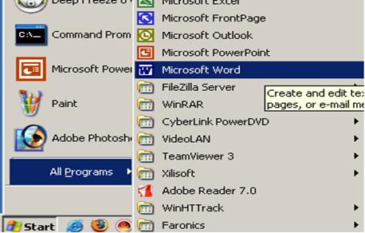
-
The opening word screen will get displayed as shown below. The opening screen of word will automatically open a new document and the default name of that document will be Document1.
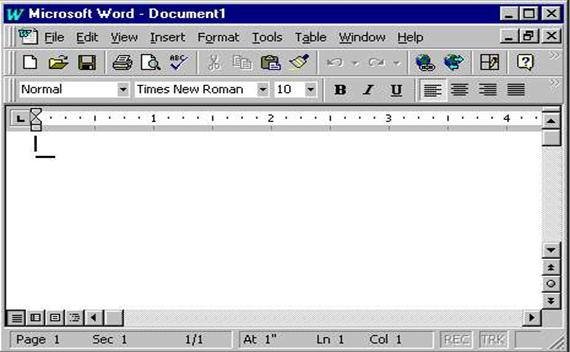
-
If you've already started Word, you create a new document by clicking New on the File menu. In the New Document task pane that opens, click Blank document.
-
In the upper-left corner of the document, or page, is the insertion point, a blinking vertical line. Typed content will appear there.
-
Keep typing continuously even if the end of the line encountered. With the help of the word wrap property the lines will be automatically displayed in the next consecutive lines.
-
Press ENTER to start another paragraph.
Navigating Through Document
-
Movement around the created document is achieved with the help of the following operations:
To perform this action...
Press...
To move one character to the left
LEFT ARROW
To move one character to the right
RIGHT ARROW
To move up one line
UP ARROW
To move down one line
DOWN ARROW
To move to the end of a line
END
To move to the beginning of a line
HOME
To move up one screen (scrolling)
PAGE UP
To move down one screen (scrolling)
PAGE DOWN
To move to the end of a document
CTRL+END
To move to the beginning of a document
CTRL+HOME
Selecting the text in the document-
To select the document in the text the following operations can be performed:
To perform this action...
Press...
To select one character to the right
SHIFT+RIGHT ARROW
To select one character to the left
SHIFT+LEFT ARROW
To select to the beginning of a word
CTRL+SHIFT+LEFT ARROW
To select to the end of a line
SHIFT+END
To select to the beginning of a line
SHIFT+HOME
To select the entire document
CTRL+A
Editing the document
-
Cut
-
Cut operation removes the selection from the active document and places it on the clipboard.
-
Select the text to be cut in the document.
-
Go to Edit menu and select Cut option or click the cut icon (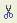) in the toolbar or make use of the shortcut key combination Ctrl+X to cut the text.
-
Copy
-
Copies the selection to the clipboard
-
Select the text to be copied in the document.
-
Go to Edit menu and select Copy option or click the copy icon () in the toolbar or make use of the shortcut key combination Ctrl+C to copy the selected text.
-
Paste
-
Paste inserts the contents of the clipboard at the insertion point (cursor) or whatever is selected.
-
First go to the place where you want to display the cut text.
-
From the Edit menu select Paste option or click paste icon () in the toolbar or press the short cut key Ctrl+V
-
Find and Replace
-
Find searches for specified text in the active document
-
To find a specified text in the document go to Edit menu choose find option or click the find icon () on the toolbar or make use of the shortcut key combination Ctrl+F.
-
The Find and Replace dialog box will get displayed.
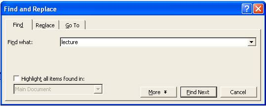
-
Enter the text to be searched in the Find what tab.
-
Clicking the Find Next button the specified text will be located in the document.
-
Replace searches for and replaces specified text.
-
To replace go to edit menu and select Replace option or click the replace icon in the toolbar or make use of the shortcut key combination Ctrl+H.
-
Find and Replace dialog will get displayed.
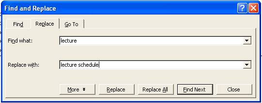
-
Clicking Find Next and Replace buttons the specified text will be replaced.
-
To replace all the instance of the text lecture with the text lecture schedule click Replace All button in the Find and Replace window.
-
Then every instance of the text lecture in the document will get replaced with the text lecture schedule.
Formatting the Document
-
Font
-
Font change font style, size, color and a large number of other features.
-
To change the font style, size of a selected text go to format menu and select Font option or click the font icon (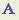) in the format toolbar.
-
The Font dialog box will get displayed.
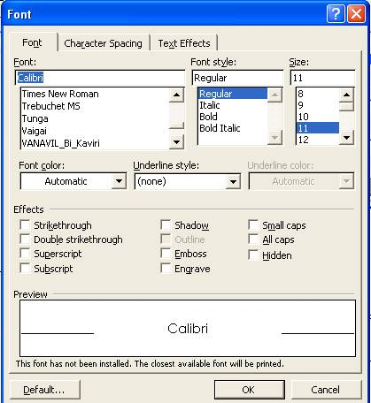
-
In the Font dialog box choose font face, font style, font size, font color etc.
-
Click OK button then the applied font effects will get reflected in the document.
-
Bold, Italic and Underline
-
Bold, Italic, Underline - Format selected text: Bold, Italic, or Underlined
-
To bold the text press Ctrl + B or click the bold icon (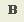) on the toolbar
-
To underline the text press Ctrl + U or click the underline icon (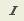) on the toolbar
-
To italics the text press Ctrl + I or click the italic icon (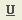) on the toolbar
-
Paragraph
-
Paragraph under format menu indents a paragraph using either margin or place some chosen amount of space before or after the paragraph.
-
Select the paragraph if already entered or simply go Format menu and choose Paragraph option or click the paragraph icon () in the toolbar.
-
Paragraph dialog box will get displayed.
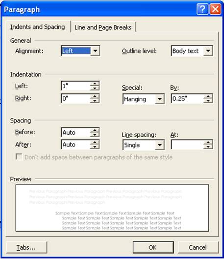
-
In the paragraph window we can set Alignment, Indentation and Spacing for paragraphs.
-
Click OK will reflect the changes in the document accordingly.
Saving the document
-
To save the document for the first time click File MenuàChoose Save As
-
Save As dialog Box will get displayed.
-
Select the directory where you want to save or create a new folder by clicking New Folder icon.
-
Enter the file name in the File name box.
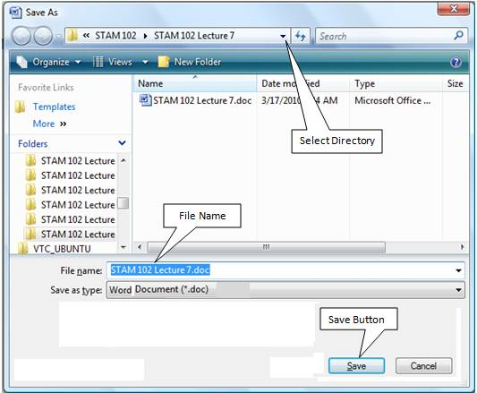
-
Click Save. The file is saved under the new name.
-
To save subsequently click on Save from File Menu.
-
Or hold the Ctrl. Key and press S from keyboard.
-
Or click Save button () in the standard toolbar.
-
| Download this lecture as PDF here |
| Download training note here |